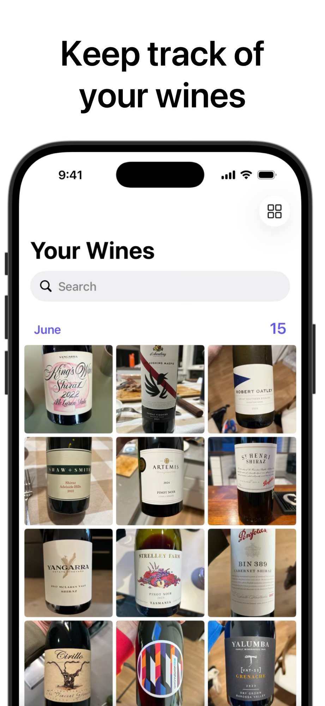
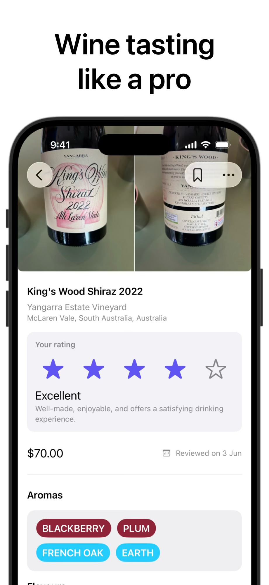
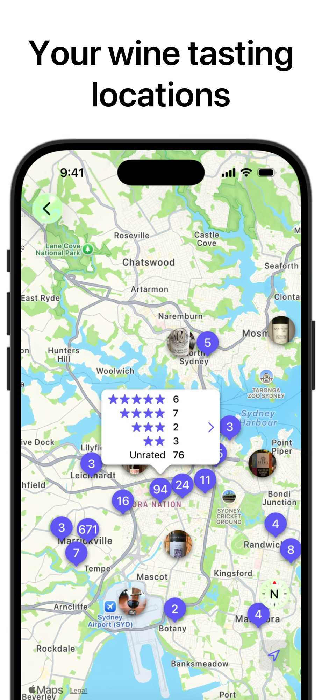
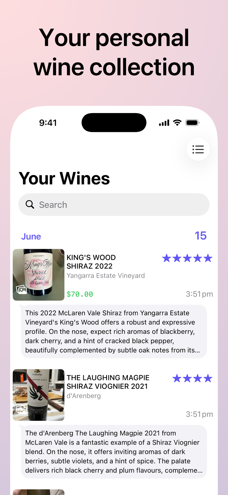
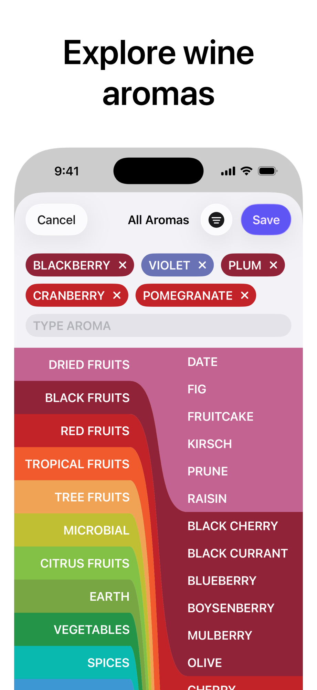
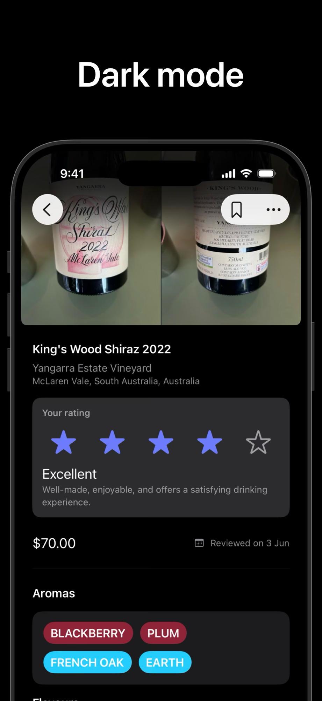
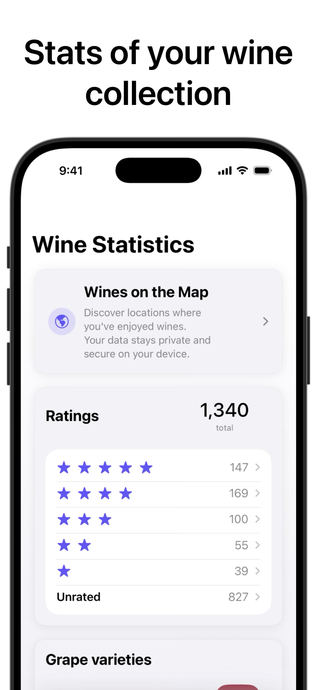

Your wine memory, made simple
gotBottle
Scan. Save. Remember.
Point your camera at a wine label. gotBottle identifies it, writes a useful tasting note, and keeps it ready for the next time you are choosing a bottle.



From label to library
Remember the wine,
not the admin.
-
01
Scan the label
Capture any bottle in seconds. Smarter matching finds wines already in your collection.
-
02
Make it yours
Start with an AI-generated review, then adjust the rating, aromas, price, and notes.
-
03
Find it again
Browse, search, map, and revisit every bottle in your private collection.
Inside the app
Everything your palate
will want later.
Swipe through the current gotBottle experience.




Yours means yours
A personal collection.
Not a social network.
No public ratings, no feed, and no strangers telling you what to drink. Your wine history stays private and ready when you need it.
Read our privacy policy01 Private by design
02 No account required
03 Your notes, your taste
For the next bottle worth remembering